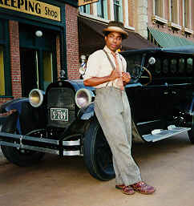

Chris Thomas King in Moscow, Nov., 99
Перед вами - неправленое, неотредактированное интервью. Перевод делался максимально близко к смыслу сказанного, но с учетом манеры говорить интервьюируемых.
Фрагменты интервью использовались в радиопрограмме "Весь Этот Блюз" и телепрограмме "Джазофрения".
| Я слишком долго спал. Я посмотрю город завтра. Я хочу прогуляться и многое посмотреть. Мы прилетели из Турции, пересаживались с самолета на самолет. Я очень взволнован, что я здесь. | 30 I slept so much. I'll see the city but
tomorrow. I want to go out and see many things. We are coming from
Turkey to catch the plane, and another plane. I'm so exited to be here. It's a good thing. |
| ЕА: Как играется
молодому артисту в одной программе с
закаленными ветеранами? КТК: Мне повезло в том, что я мог играть с Уилли Диксоном, и Бадди Гаем, с Албертом Коллинзом - эти хорошие музыканты растили меня с малых лет. Выступать с ними было очень важным опытом для меня. Я родился в Батон Руж, но я из Нового Орлеана. Я сейчас живу в Новом Орлеане. |
I been lucky enough to play with Willie
Dixon, and Buddy Guy, Albert Collins and Albert King - these good
musicians raised me up from being a little boy. Playing with them I had
a very good experience. I was born in Baton Rouge, but I'm from New Orleans. I live in New Orleans now |
| За прошедшие годы я выпустил 7 альбомов. То, что я делаю, очень отличается от того, что делают старшие блюзмэны. Я добавляю к своему блюзу ритмы хип-хопа, немного рэпа…Это звучание по началу вызывало споры в Америке. Потому что люди, которые заправляют блюзом, говорят, что это не блюз, что так не должно быть… Но музыка должна развиваться, должна двигаться дальше. Так что моя музыка представляет мое поколение. А их музыка представляет их поколение. Как и должно быть. | And over the years I did seven albums. The things I'm doing are different from the older musicians. I combine a little hiphop rhythm with my blues. A little rap with my blues. And it's a sound that was controversial in America in the beginning. Because the people that run -blues- they say this is not the blues. This is no way it should be. But music has to evolve, has to move on. So my music represent my generation. And their music represents their generation. Which is ok. |
| На блюз можно взглянуть
по-разному. Блюз в старые времена
рассматривали как дьявольскую музыку.
Это была плохая музыка. Ее не следовало
петь. Это было так, даже со старшими
музыкантами - их родители не одобряли
музыку, которую они пели. Они должны
были петь церковную музыку, или что-то в
этом роде. Так сегодня, вы знаете, самая
популярная музыка - это рэп-музыка. И
снова, вроде, это - плохая музыка, это
дьявольская музыка и тебе ее не следует
петь. Опять все то же. Она тоже из гетто.
Она из той же части города, откуда
пришел блюз. Внук блюза - это хип-хоп,
понимаете? (моя музыка - ) не все хип-хоп. Это счастливая музыка; это печальная музыка; музыка, под которую можно заниматься любовью… Я хочу сказать, что для меня естественно расти. Мой отец - блюзовый музыкант, Алберт Томас. И у нас есть клуб в Баттон-Руж, которые работает многие годы. И мой отец включал пластинки, блюзовые пластинки, и я рос, слушая их. Я начал играть очень молодым. |
You can look at blues in different ways. The
blues from the old time was seen as a devil's music. It was a bad music.
You shouldn't sing it. And it was so, even older musicians, their
parents didn't like the music they sang. They should sing the church
music or something. So today, you know, the most popular music is rap
music, and it's like - it's the bad music, it's the devil's music, and
you shouldn't sing it. It's the same thing. It's also from the ghetto.
It comes from the same parts of town, where blues came from. The grand
children of the blues is the hip-hop, you know. Not all the hip-hop, thare's's happy music, there's sad music, there's music to make love to, so. I'm not saying all, but I'm saying that it's natural for me growing up. My dad is a blues musician, Tabby Thomas, and we have a blues club in Baton Rouge, that's been up for years. And my dad would made records, the blues records, and he is still around doing it. But that's how I grew up, very young to play the music. |
| Мой первый приезд в Европу состоялся в 1983 году. Я приехал в Европу выступать на блюзовом фестивале с Лютером Эллисоном и многими другими исполнителями блюза. И это было моим первым путешествием. Это было 17 лет назад, так что я был очень молод. И я играл на гитаре с блюзовыми музыкантами. И с тех самых пор я решил сам записывать пластинки, я решил сделать свой собственный блюзовый саунд. Я решил, что мне нужно обладать саундом моего поколения. Даже если мне нравился старинный стиль. | My first visit to Europe was in 1983, I came to Europe to play blues festival with Luther Allison and many other blues performers. And that was my first trip. That was 17 years ago. We're talking - very young. And I played the guitar with blues musicians. 01.06.03 And ever since then I decided to do my own records, I decided to do my own blues sound. I decided I should have the sound of my generation. Even if I loved the older style. |
| Сегодня вы услышите исполнение, вроде, Дельта-блюза: акустический. С гармоникой и акустической гитарой. Но у меня и группа есть, которая играет в электричестве более агрессивный, более блюз-рок, в таком стиле тоже. Так мой последний альбом, под названием "Красная глина", добрался до премий им.Дабл-Ю Си Хэнди, он был номинирован на "лучший акустический блюзовый альбом. Всю мою музыку можно найти на моем интернет-сайте КрисТомасКинг.ком | Tonight you gonna hear playing like delta blues, acoustic with the harmonica and acoustic guitar. But I have a band as well, that plays electric more aggressive, more blues-rock, that style too. So my latest album, was called RED MUD it was nominated for two WC HANDY awards in America, which is like two grammy awards. It was nominated for the best acoustic blues album. All my music can be found on my Internet site http://www.christhomasking.com |
| Многие меня теперь не узнают, из-за дредлоков. У меня были длинные дредлоки, вот досюда, лет десять. Вот так… Я только что закончил работу в новом фильме, я еще и актер. Так что я в новом фильме братьев Коэн. С Джоржем Клуни и Джоном Тартурро в главных ролях, и с другими замечательными актерами. Он называется: "О, брат, где ты есть?" Мы снимали его в Миссиссиппи. Я сыграл исполнителя дельта-блюза по имени Томми Джонсон. И это из 30-х годов, а в 30-х в Миссиссиппи не носили вот до сюда дредлоков. Понимаете? Так что я носил блюзовую шляпу, и я в этом фильме продал душу дьяволу. Это было безумное… веселое, понимаете, время. И… немного мрачное, но… Веселое. И очень доброе. Этот фильм выйдет в америке летом. Так что я не знаю, когда он дойдет до России. Но мне люди говорили, что это самая большая возможность для блюза показаться в большом голливудском фильме, (компании) Дисней Универсал Пикчерз. И это очень большая возможность. Не просто эпизодическая роль. Я играю персонажа, похожего на Роберта Джонсона, похожего, но… Его имя Томми Джонсон. И… Ну, скрываемся от полиции. Я продал душу дьяволу, и они подобрали меня, когда я автостопил на перекрестке, после того, как они сбежали из тюрьмы… где их держали в кандалах, а они бежали, и цепи еще на них. И они едут по этой дороге, и подбирают меня, когда я автостопил вот так. И мы скоре становимся друзьями. Мы называем себя "пареньками с надранными задами", и это превращается в странствующий оркестр. Это очень весело. И я встречаюсб с Ку-Клукс-Кланом, много безумный штук случается. Фильм основывается на книге "Одиссея Гомера" - старой греческой книге. "Одиссея Гомера" - если вы ее знаете… Это старая старая старая книга, 2000 лет, действительно старая. Может быть, вы здесь ее по-другому называете. | A lot of people don't recognise me because of dreadlocks. I had a very long dreadlocks - up to hear - for ten years. This way… But I just finished doing a new movie, I'm an actor as well. So, I'm in a new Cohen bros movie. Staring George Clooney and John Turturro and some other really fine actors. It's called "O Brother, Where Art Thou?" We shot it in Mississippi. I played a Delta blues musician whose name is Tommy Johnson. And it's from 1930's, so in 1930's in Mississippi you didn't had that long dreadlocks. You know. So I weared a blues hat, and I sold my soul to the devil in the film. It's a crazy... fun, yoou know, time... And... A little bit on the dark side but but but... funny. And very good. But that movie will be out in America in the summer. So I don't know when it will come to Russia. But the people had told me that it's the biggest apportunity for blues to be in a big Holliwood movie, Disney Universal Pictures. And it's a very big opportunity. It's not just a cameo. I play a caracter kind of like Robert Johnson, kind of but... His name is Tommy Johnson. And... Running from the police and... I sold my soul to the devil, they picked me up hitchicking at the crossroads after they break out from this prison... this chaingang prison, and they break away and they got chains on them. And they're riding down this road and they picked me up hitch-hicking like this. And we become friends in a litle. We call ourselfs "the soiled bottom boys", that will become a little band on the run. It's very funny. And I meet the CookCluxClan, a lot of crazy stuff happends. The movie is based on a book "Homer' Odyssey" - the old greek book. "Homer' Odyssey" - if you know that. That's an old old old book, 2000 thousand years, really old book. You might call it something different here. |

(c) ВЭБ